Costa Blanca · Orihuela Costa
Inmuebles en venta en Orihuela Costa
Pisos cerca de la playa, viviendas en algunos de los mejores campos de golf de España y villas de lujo en Campoamor. Estos son los inmuebles que vendemos hoy en Orihuela Costa, con una breve guía de las zonas y lo que cuesta de verdad comprar.
- 26inmuebles en venta en Orihuela Costa
- desde 255.000 €un piso nuevo
- unos 45 minal aeropuerto de Alicante-Elche
- 4 campos de golfa pocos minutos de la costa
En venta ahora
Inmuebles en venta en Orihuela Costa
Pisos nuevos de 2 o 3 dormitorios con piscina comunitaria, muchos en resorts de golf o a un paseo de la playa, además de villas con piscina privada en Campoamor, Cabo Roig y Las Colinas. Los precios son los de hoy; pregúntenos por la disponibilidad actual.
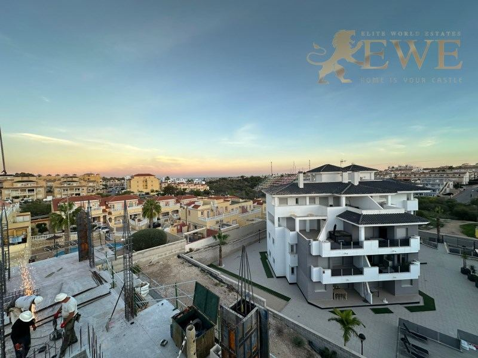
Orihuela Costa
Great apartment close to the golf course in Campoamor
255.000 €
2 dormitorios · 2 baños · 65 m²Ref. EWE3474
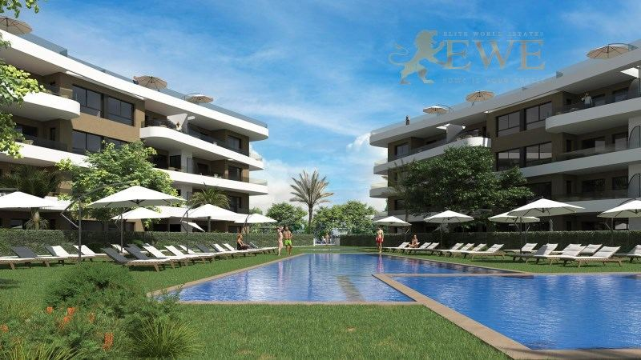
Orihuela Costa
Elegant apartment close to the sea in Punta Prima
265.000 €
2 dormitorios · 2 baños · 62.5 m²Ref. EWE3347
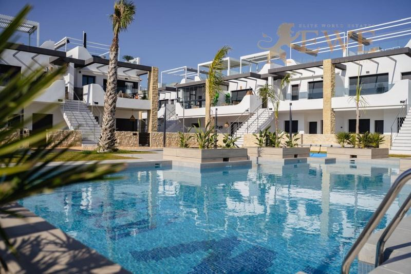
Entrega fin 2028Orihuela Costa
New apartments with a swimming pool 2 km from the sea in Punta Prima
315.000 €
3 dormitorios · 2 baños · 68 m²Ref. EWE3911
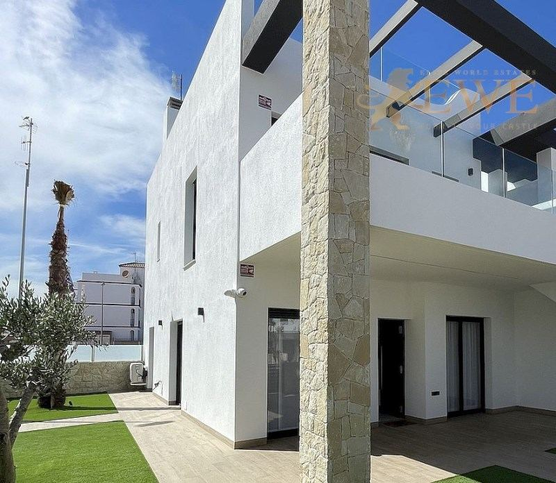
Orihuela Costa
Ready-made duplex with a large terrace in Villamartín
363.500 €
3 dormitorios · 90 m²Ref. EWE3711
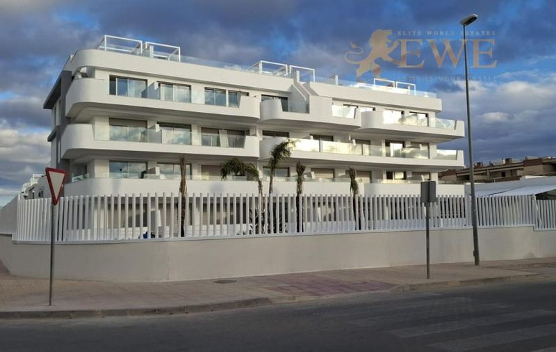
Orihuela Costa
Key ready apartment in Lomas de Cabo Roig
390.000 €
2 dormitorios · 2 baños · 75 m²Ref. EWE2187
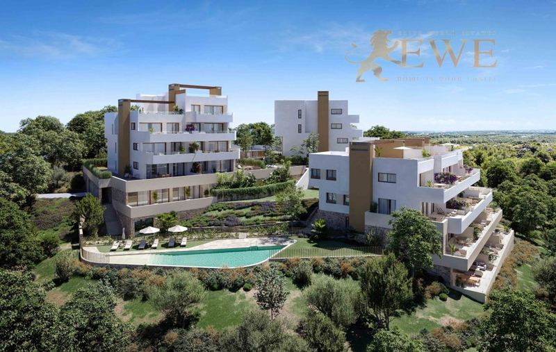
Orihuela Costa
New apartments with large terraces in prestigious Las Colinas
480.000 €
2 dormitorios · 2 baños · 105 m²Ref. EWE3883
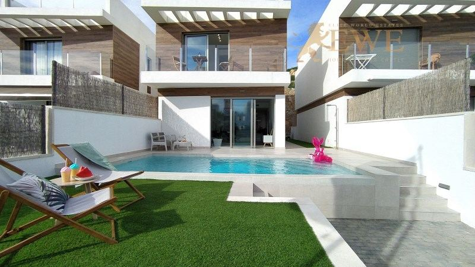
Orihuela Costa
Modern villa near Golf Course in Villamartin
499.000 €
3 dormitorios · 3 baños · 120 m²Ref. EWE2919
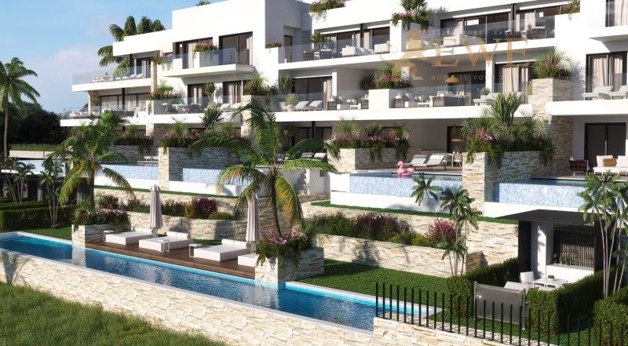
Orihuela Costa
Fantastic penthouse with private pool in Las Colinas Golf
549.000 €
2 dormitorios · 2 baños · 99 m²Ref. EWE2150
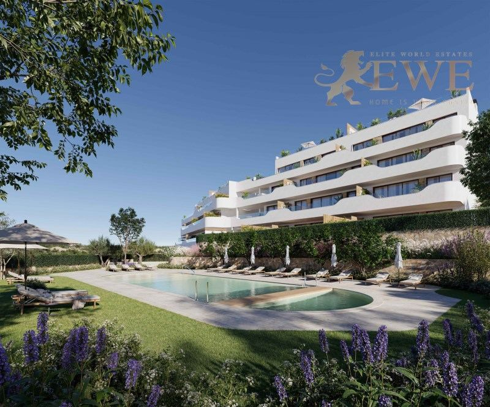
Entrega dic 2027Orihuela Costa
Luxury apartment with a large terrace in Las Colinas
615.000 €
3 dormitorios · 3 baños · 144 m²Ref. EWE3887
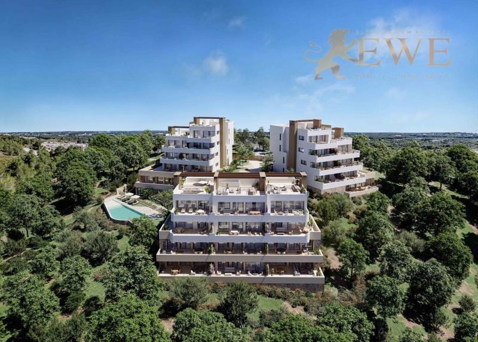
Orihuela Costa
Exclusive apartments with spacious terraces in Las Colinas
625.000 €
3 dormitorios · 3 baños · 136 m²Ref. EWE3884
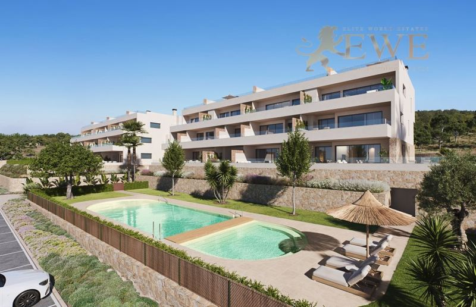
Entrega May 2027Orihuela Costa
Modern apartment in the exclusive Las Colinas resort
640.000 €
3 dormitorios · 2 baños · 140 m²Ref. EWE3885
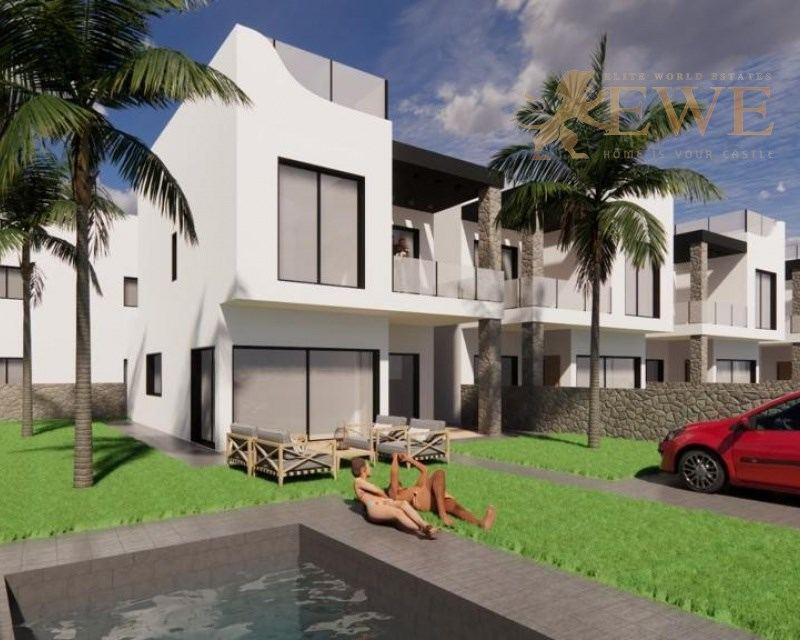
Orihuela Costa
A house close to the beach in an intimate estate in Punta Prima
699.000 €
3 dormitorios · 2 baños · 76.7 m²Ref. EWE2668
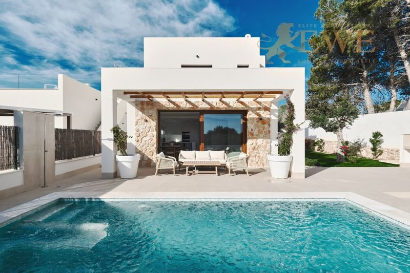
Llave en manoOrihuela Costa
Mediterranean villa with swimming pool in Cabo Roig
760.000 €
3 dormitorios · 2 baños · 110 m²Ref. EWE3137
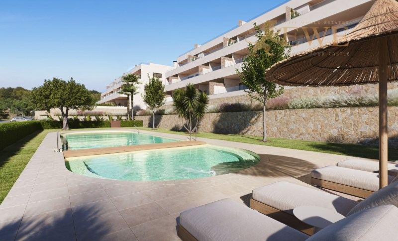
Entrega May 2027Orihuela Costa
Modern penthouse in the exclusive Las Colinas resort
935.000 €
3 dormitorios · 3 baños · 141 m²Ref. EWE3886
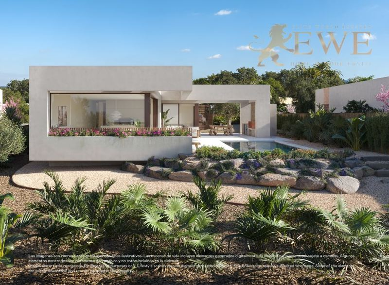
Orihuela Costa
Luxury villa in Las Colinas Golf Resort, Orihuela Costa
1.090.000 €
3 dormitorios · 3 baños · 165 m²Ref. EWE1898
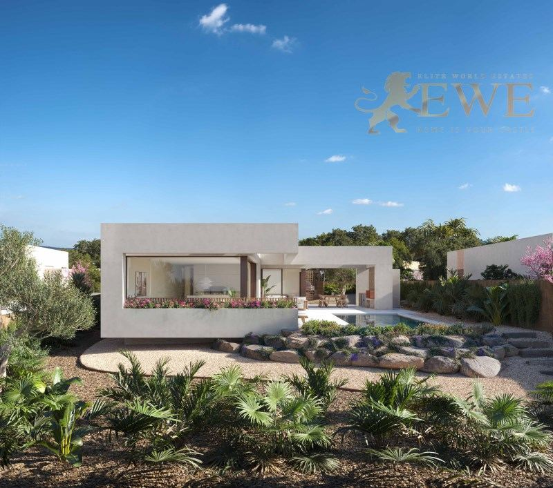
Orihuela Costa
Exclusive villa with a private pool in Las Colinas
1.090.000 €
3 dormitorios · 3 baños · 165 m²Ref. EWE3889
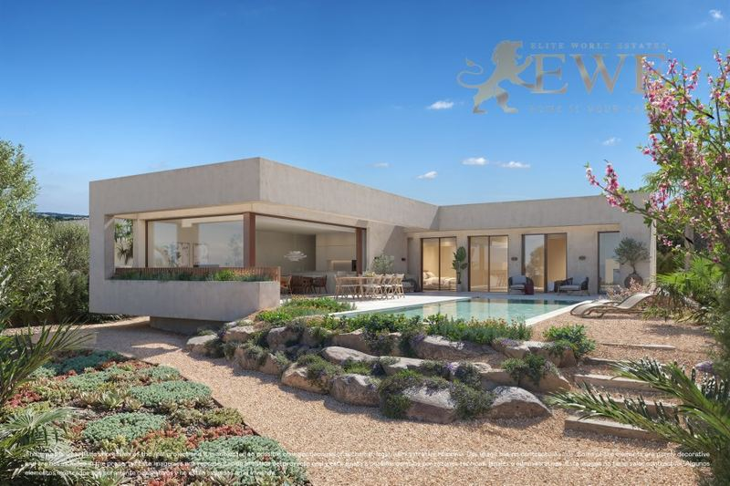
Entrega T3 2027Orihuela Costa
Exquisite villa in Las Colinas Golf, Orihuela Costa
1.150.000 €
3 dormitorios · 3 baños · 172 m²Ref. EWE1897
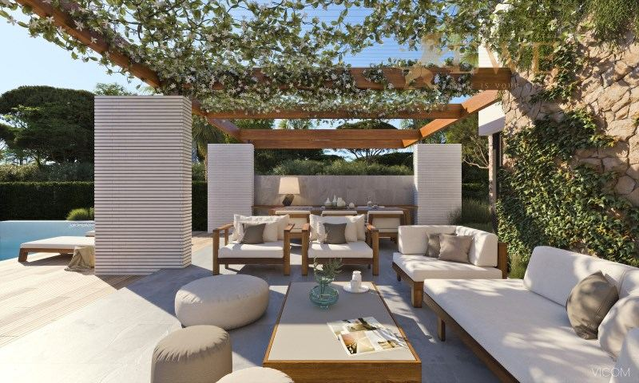
Orihuela Costa
Fabulous villa with pool in the green area of Campoamor, Orihuela Costa
1.160.000 €
4 dormitorios · 4 baños · 196 m²Ref. EWE1799
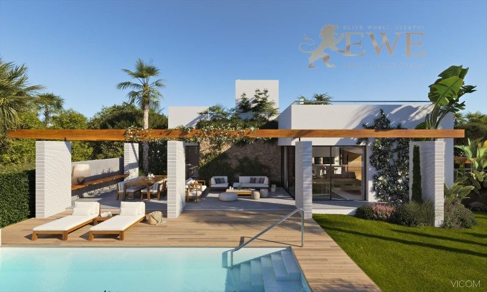
Orihuela Costa
Mediterranean property in the prestigious Campoamor district, Orihuela Costa
1.350.000 €
4 dormitorios · 4 baños · 270 m²Ref. EWE1789
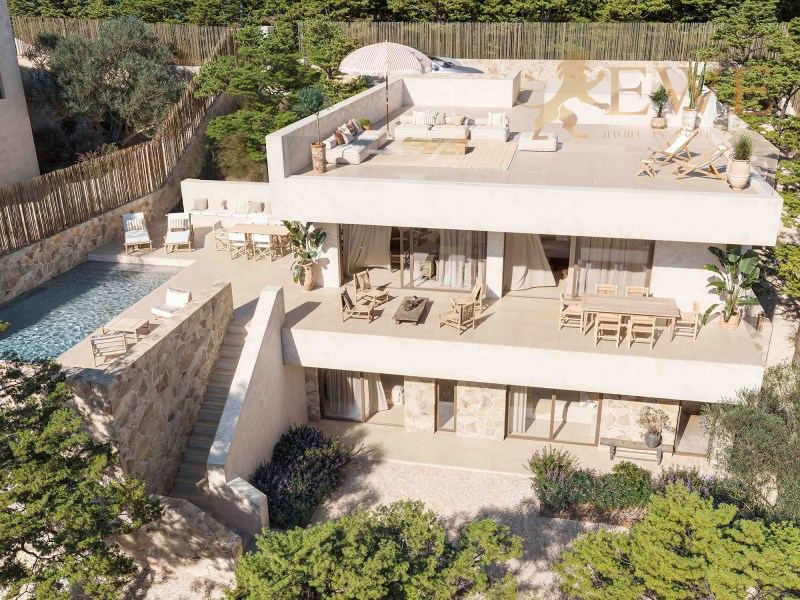
Orihuela Costa
Exclusive villa in the natural surroundings of Las Colinas
1.395.000 €
3 dormitorios · 3 baños · 260 m²Ref. EWE3888
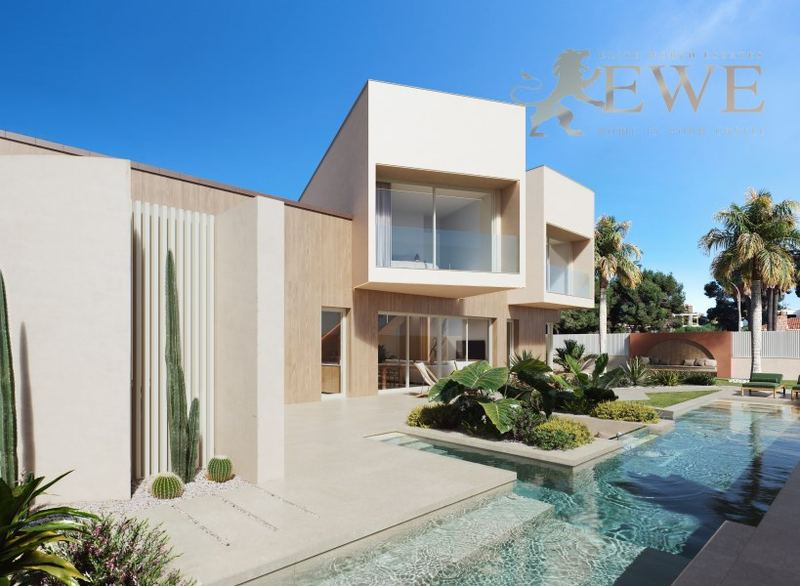
Entrega desde dic 2026Orihuela Costa
Exclusive Villa with Private Pool Just 850 m from the Beach in Campoamor
1.470.000 €
Ref. EWE3761
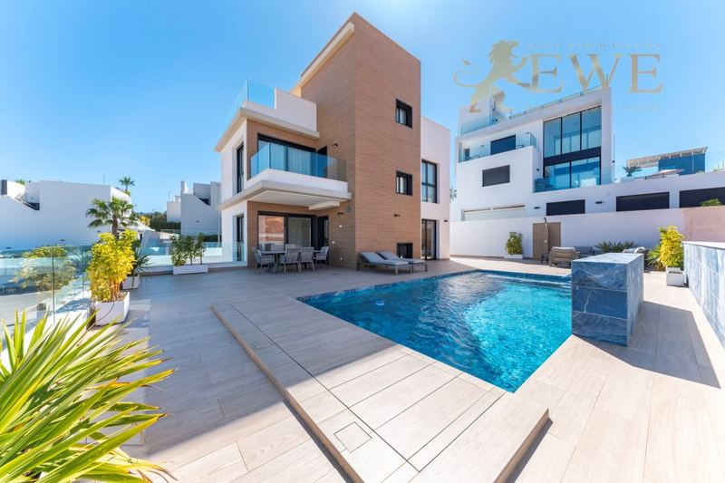
Orihuela Costa
Modern villa near the beach in Dehesa de Campoamor, Orihuela Costa
1.780.000 €
5 dormitorios · 6 baños · 378 m²Ref. EWE2120
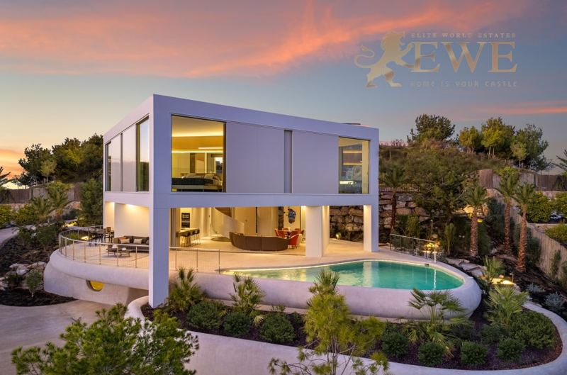
Llave en manoOrihuela Costa
A Luxurious Villa in Las Colinas Golf
2.365.000 €
3 dormitorios · 4 baños · 332 m²Ref. EWE2345
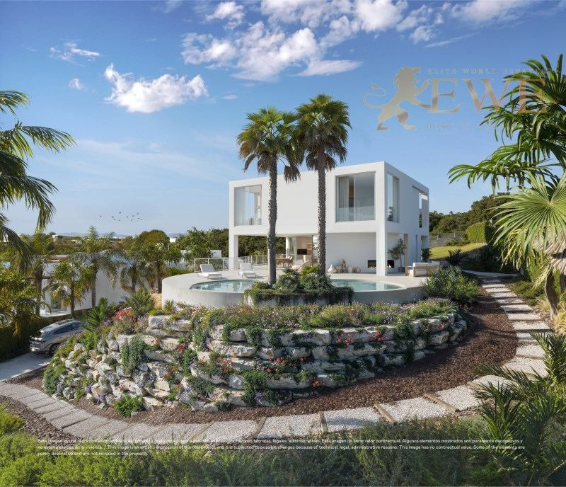
Entrega verano 2027Orihuela Costa
Contemporary villa with swimming pool in the luxurious Las Colinas Golf Resort
2.490.000 €
3 dormitorios · 4 baños · 483 m²Ref. EWE1900
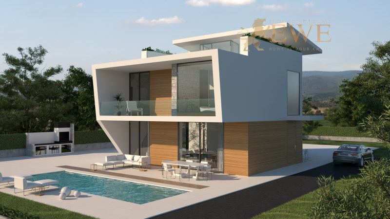
Orihuela Costa
Luxury villa near the sea in Dehesa de Campoamor, Orihuela Costa
3.200.000 €
4 dormitorios · 4 baños · 250 m²Ref. EWE2119
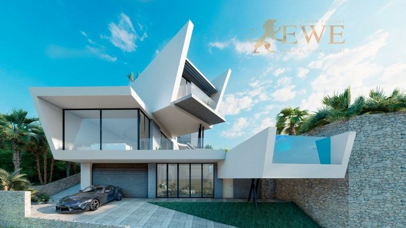
Orihuela Costa
Luxury Villa with Sea Views in Campoamor
3.600.000 €
5 dormitorios · 7 baños · 388 m²Ref. EWE3812
Muy cerca
Cerca de Orihuela Costa: Vistabella Golf, San Miguel de Salinas
A pocos minutos hacia el interior: Vistabella Golf, un resort de golf más reciente con villas y adosados con piscina privada, y San Miguel de Salinas, un pueblo español cerca de los campos de golf con pisos nuevos y villas, a menudo más baratos que junto al mar.
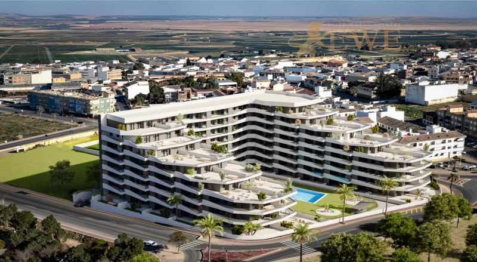
Entrega sept 2028San Miguel de Salinas
New apartments with large terraces in San Miguel de Salinas
194.900 €
2 dormitorios · 2 baños · 66 m²Ref. EWE3876
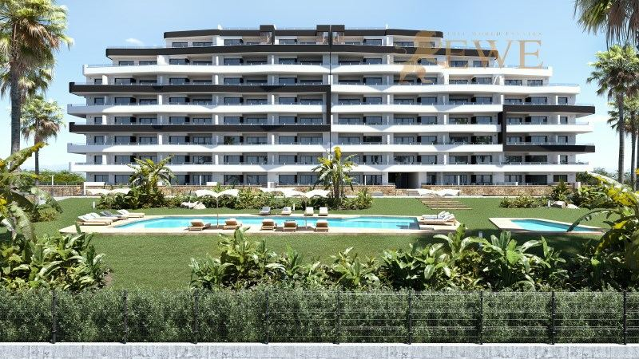
Entrega dic 2026San Miguel de Salinas
Furnished, new apartment for sale in San Miguel de Salinas
219.000 €
2 dormitorios · 2 baños · 70 m²Ref. EWE3478
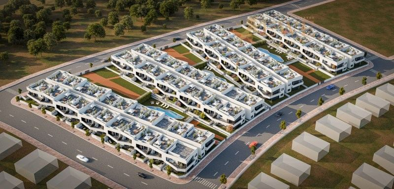
San Miguel de Salinas
The new apartment project in San Miguel de Salinas
224.900 €
2 dormitorios · 2 baños · 68 m²Ref. EWE3551
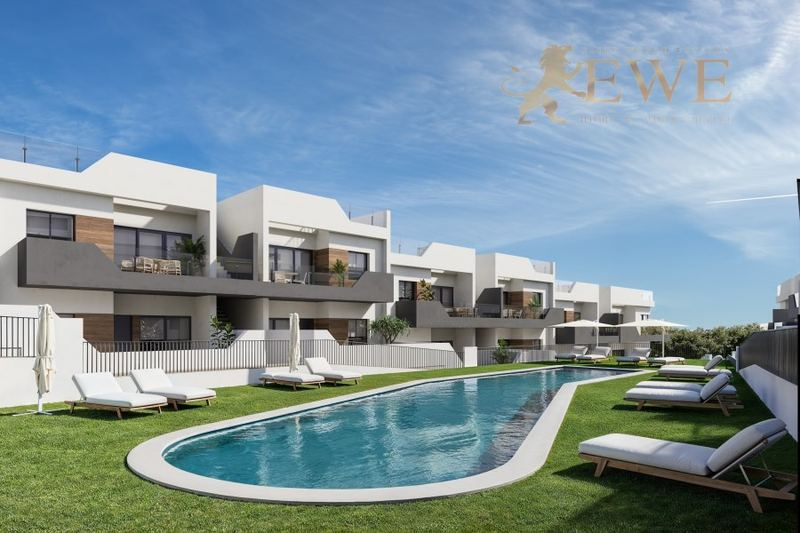
San Miguel de Salinas
Modern bungalow with shared pools in San Miguel de Salinas
244.900 €
3 dormitorios · 2 baños · 65.93 m²Ref. EWE3319
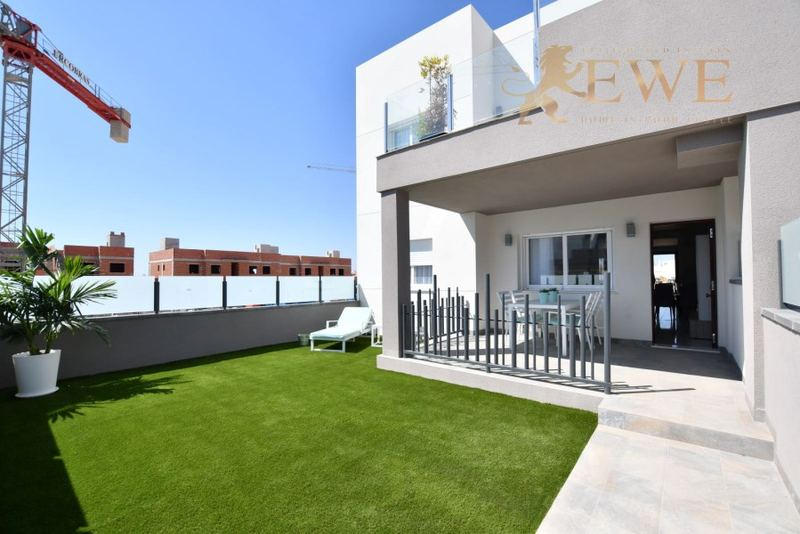
Entrega desde dic 2026San Miguel de Salinas
New Apartments with Private Garden or Solarium in San Miguel de Salinas
251.900 €
2 dormitorios · 2 baños · 75 m²Ref. EWE3906
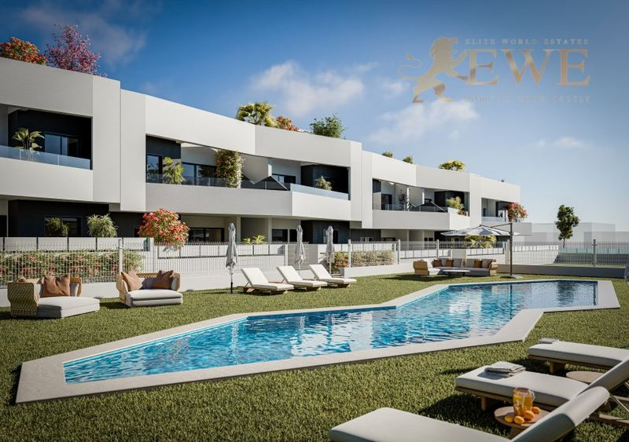
San Miguel de Salinas
New, spacious apartment in San Miguel de Salinas
259.900 €
3 dormitorios · 2 baños · 85 m²Ref. EWE3552
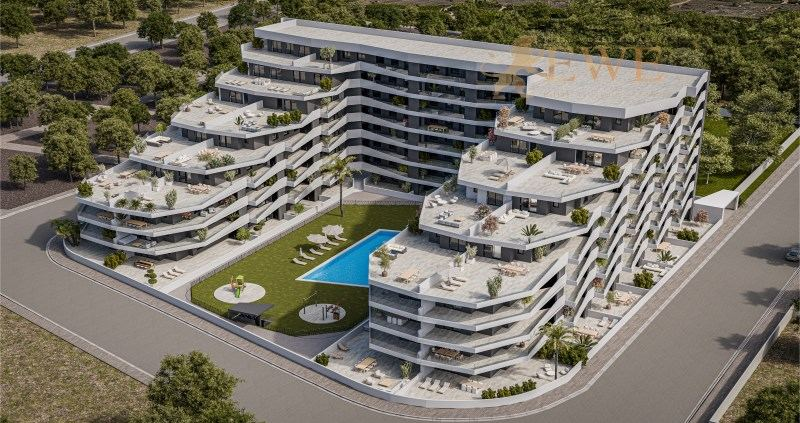
Entrega sept 2028San Miguel de Salinas
Spacious apartment with a large garden in San Miguel de Salinas
259.900 €
3 dormitorios · 2 baños · 81 m²Ref. EWE3877
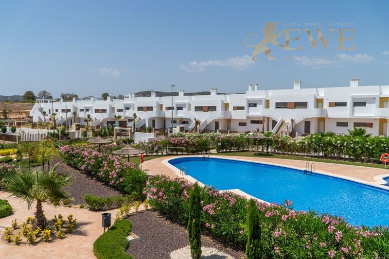
Vistabella Golf
Apartments on the Vistabella Golf Course
269.900 €
2 dormitorios · 2 baños · 76 m²Ref. EWE1369
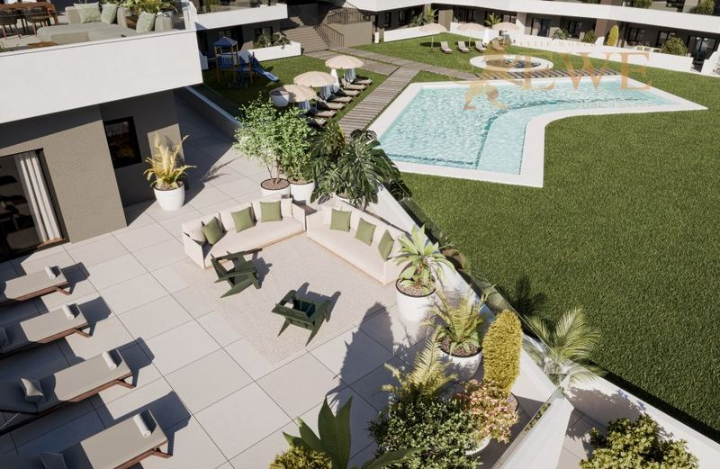
San Miguel de Salinas
Modern appartments in San Miguel de Salinas
299.900 €
2 dormitorios · 2 baños · 68 m²Ref. EWE3426
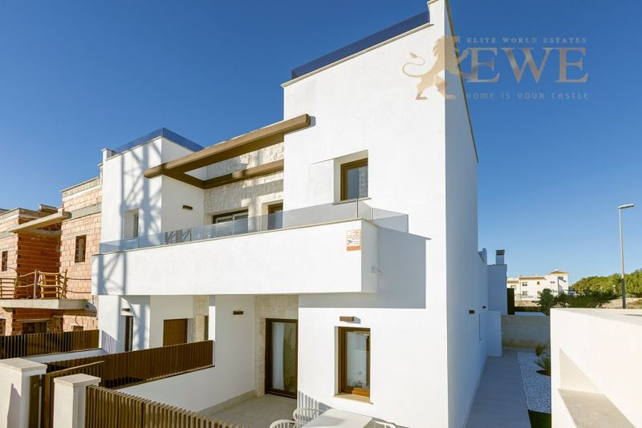
Vistabella Golf
Elegant terraced house in the picturesque Vistabella Golf
325.000 €
3 dormitorios · 3 baños · 95 m²Ref. EWE3430
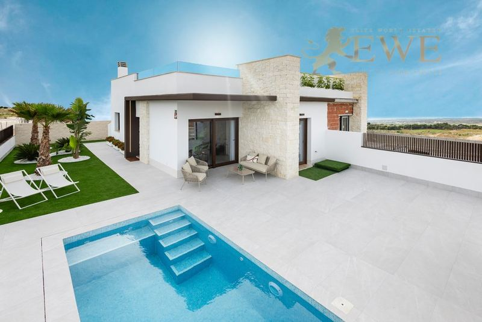
Vistabella Golf
Elegant semi-detached house with pool in Vistabella Golf
351.000 €
2 dormitorios · 2 baños · 73 m²Ref. EWE3429
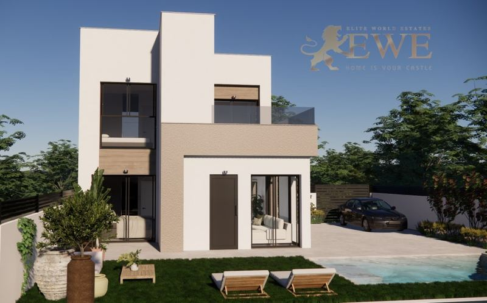
Entrega sept 2027Vistabella Golf
Modern Villa with Private Pool at Vistabella Golf
356.900 €
3 dormitorios · 2 baños · 90 m²Ref. EWE3736
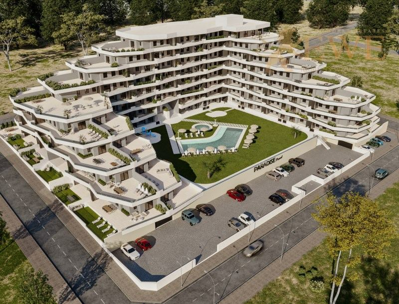
San Miguel de Salinas
Brand new residential complex in San Miguel de Salinas
399.900 €
3 dormitorios · 2 baños · 83 m²Ref. EWE2169
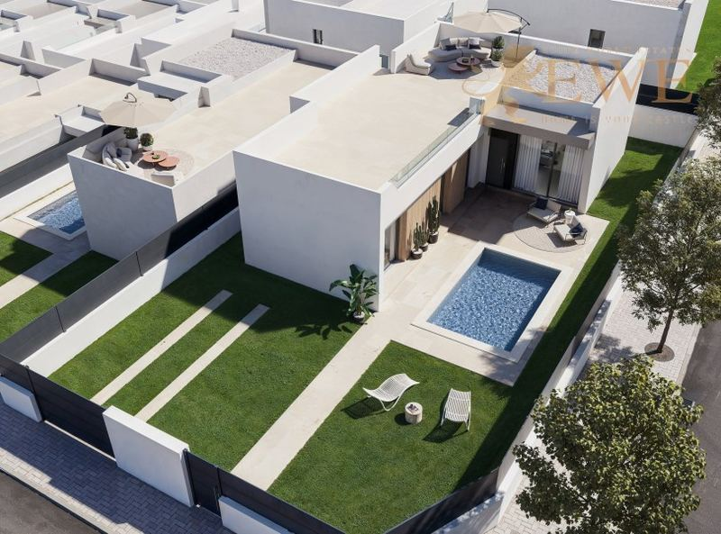
San Miguel de Salinas
New villa project in San Miguel de Salinas
429.900 €
3 dormitorios · 2 baños · 107 m²Ref. EWE3425
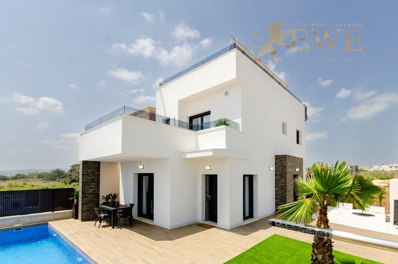
Vistabella Golf
Modern villa with swimming pool in Vistabella
465.000 €
3 dormitorios · 3 baños · 118 m²Ref. EWE2184
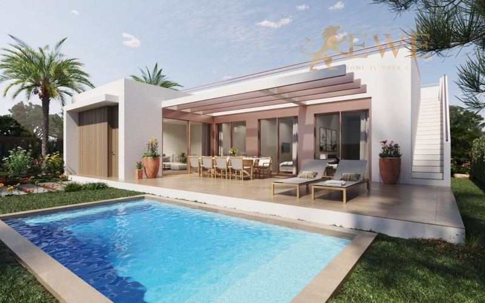
Vistabella Golf
Excellent villa with swimming pool near the Vistabella golf course
469.900 €
3 dormitorios · 2 baños · 115 m²Ref. EWE3632
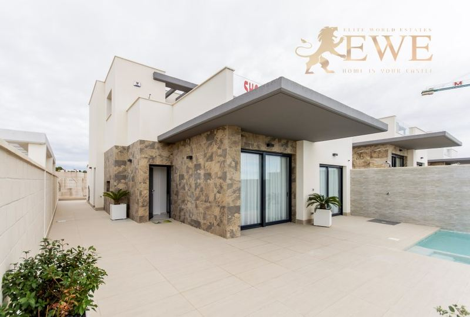
San Miguel de Salinas
Modern villa with pool and garage in San Miguel de Salinas
630.000 €
3 dormitorios · 2 baños · 144 m²Ref. EWE2121
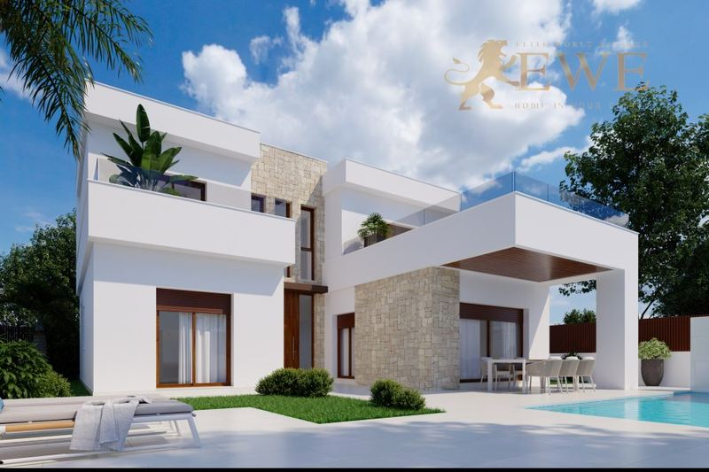
Vistabella Golf
Elegant villa with private pool in Vistabella Golf
649.000 €
4 dormitorios · 3 baños · 169 m²Ref. EWE3431
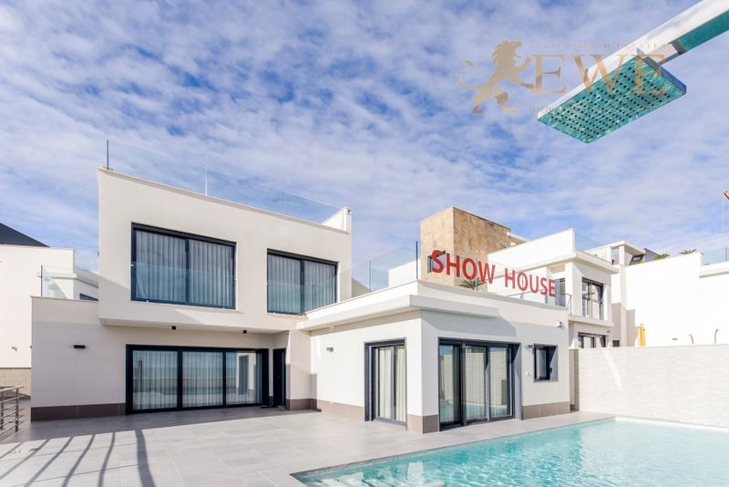
San Miguel de Salinas
Superb villa with a large plot and private pool in San Miguel de Salinas
1.250.000 €
3 dormitorios · 4 baños · 194 m²Ref. EWE1613
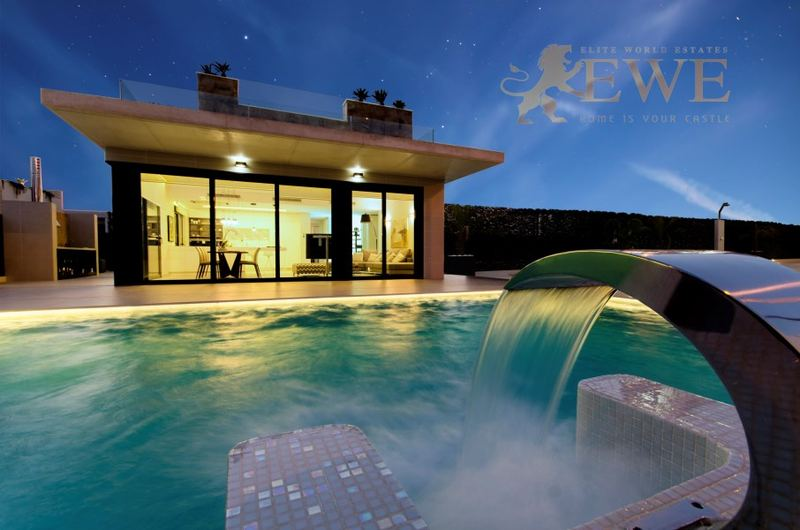
San Miguel de Salinas
Modern villa with private pool in San Miguel de Salinas
1.250.000 €
4 dormitorios · 3 baños · 197 m²Ref. EWE2151
La ciudad
Vivir en Orihuela Costa
Orihuela Costa es la parte costera del municipio de Orihuela, en el sur de la Costa Blanca, entre Torrevieja y Pilar de la Horadada. Es una sucesión de zonas residenciales junto al mar, cada una con su playa o cala, como Punta Prima, Playa Flamenca, La Zenia, Cabo Roig y Campoamor.
Es uno de los mejores lugares de España para jugar al golf. Las Colinas Golf & Country Club, Villamartín, Las Ramblas y Campoamor están a pocos minutos de la costa, y muchas promociones nuevas se construyen junto a los campos.
La vida aquí es fácil todo el año, con una gran comunidad internacional, el centro comercial La Zenia Boulevard, restaurantes, centros de salud y colegios internacionales. El aeropuerto de Alicante-Elche está a unos 45 minutos en coche, y el de la Región de Murcia a unos 40 minutos.
Dónde comprar
Las principales zonas de Orihuela Costa
Las Colinas Golf
Un gran club de golf cerrado en un valle verde a pocos minutos del mar, con seguridad y club de playa propio. Pisos, áticos y villas.
Dehesa de Campoamor
La parte más exclusiva de la costa, con puerto deportivo, playas tranquilas y pinos. Grandes villas con jardín y piscina.
Cabo Roig
Un pequeño puerto deportivo y una fila de restaurantes sobre el mar, con calas a ambos lados. Villas y pisos cerca del agua.
Punta Prima
El extremo norte de Orihuela Costa, junto a Torrevieja. Residenciales modernos con piscina cerca del mar.
Playa Flamenca y La Zenia
Calas de arena, el paseo junto al mar y el centro comercial La Zenia Boulevard. Pisos y adosados para el día a día.
Villamartín
Un resort de golf a pocos minutos del mar, con su propia plaza de bares y restaurantes. Pisos, dúplex y villas junto al campo.
Presupuesto
Cuánto cuesta comprar en Orihuela Costa
Al precio se suman impuestos y gastos. Para un piso nuevo de 625.000 €, por ejemplo, son 62.500 € de IVA y 8.750 € de AJD, más notaría, registro y abogado. En la segunda mano los impuestos son otros, así que pídanos siempre la cifra exacta de la vivienda que le guste.
| Obra nueva | 10 % IVA + 1,4 % AJD |
|---|---|
| Segunda mano | 9 % ITP, 11 % por encima de 1 millón de € |
| Notaría, registro, abogado | aprox. 1,5–2,5 % del precio |
| Cada año | IBI y gastos de comunidad, según la vivienda |
Preguntas
Comprar vivienda en Orihuela Costa: preguntas y respuestas
¿Cuánto cuesta una vivienda en Orihuela Costa?
Nuestros pisos en Orihuela Costa empiezan hoy en 255.000 €. La mayoría de los pisos que vendemos cuestan entre 255.000 € y 640.000 €, según la zona y si están en un resort de golf o cerca de la playa. Las villas empiezan en unos 500.000 € en Villamartín y llegan a 3,6 millones de € en Campoamor.
¿Cuál es la mejor zona para comprar en Orihuela Costa?
Depende del uso que le vaya a dar. Las Colinas y Villamartín son para golfistas. Campoamor y Cabo Roig encajan con quien quiere una villa cerca del mar, y Punta Prima, Playa Flamenca y La Zenia con quien busca un piso cerca de la playa y de las tiendas.
¿Se puede vivir todo el año en Orihuela Costa?
Sí. Mucha gente vive aquí todo el año, con tiendas, restaurantes, centros de salud y colegios internacionales abiertos fuera del verano, y una gran comunidad internacional.
¿A qué distancia está Orihuela Costa del aeropuerto?
El aeropuerto de Alicante-Elche está a unos 45 minutos en coche, y el de la Región de Murcia a unos 40 minutos.
¿Qué gastos hay además del precio?
En obra nueva se paga un 10 % de IVA y un 1,4 % de AJD. En segunda mano se paga un 9 % de ITP (11 % por encima de 1 millón de €). Notaría, registro y abogado suman alrededor de un 1,5–2,5 %.
¿Pueden comprar vivienda los extranjeros en Orihuela Costa?
Sí. Cualquier persona puede comprar una vivienda en España. Necesita un NIE y normalmente una cuenta bancaria española, y le ayudamos con las dos cosas. Consulte nuestra guía del NIE.


¿Busca casa en Orihuela Costa?
Cuéntenos su presupuesto y lo que necesita. Respondemos en un día laborable, en español, inglés, alemán o polaco.